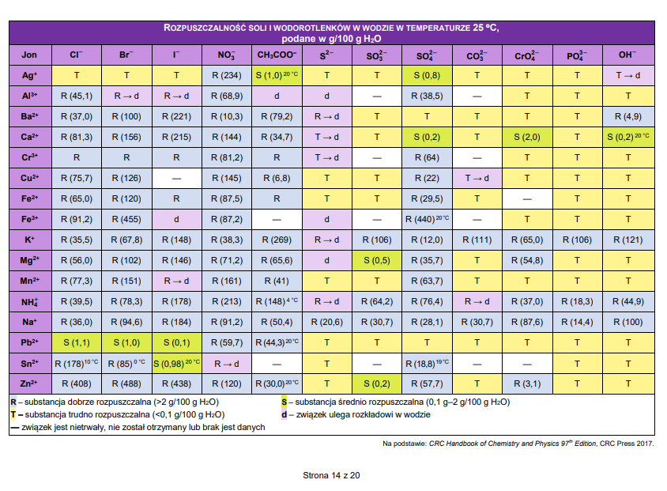
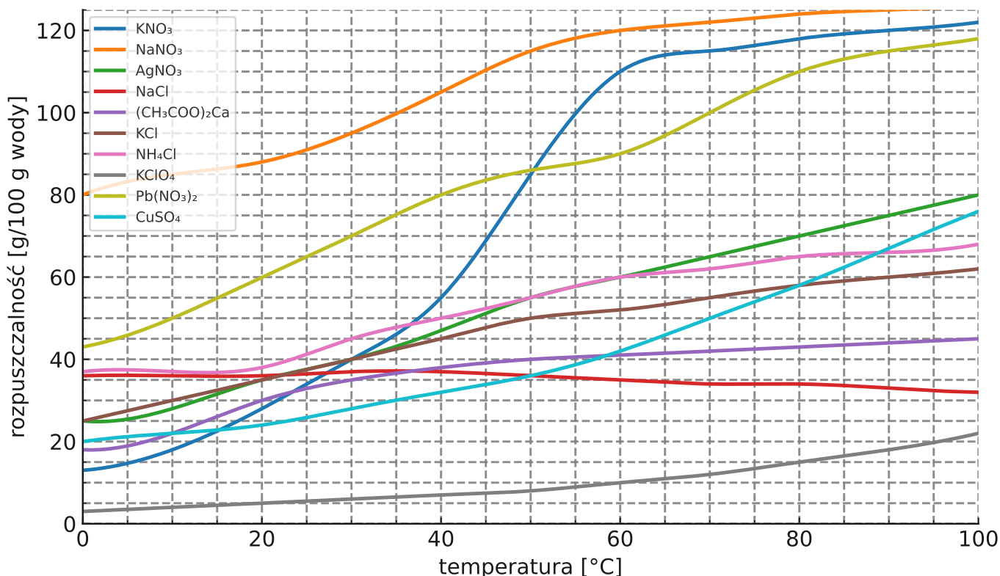

Rozpuszczalność substancji to masa danej substancji, którą możemy rozpuścić w 100 gramach wody lub innego rozpuszczalnika. Rozpuszczalność substancji w temperaturze 25°C jest podana w tablicach CKE w tabeli rozpuszczalności:

Chcąc odczytać rozpuszczalność \(CuSO_{4}\) - czyli soli składającej się z jonów \(Cu^{2 +}\) i \(SO_{4}^{2 -}\) odnajdujemy komórkę znajdującą się na przecięciu tych wiersza z jonami \(Cu^{2 +}\) i kolumny z anionami \(SO_{4}^{2 -}\) . W komórce tej znajduje się \(R(22)\) co znaczy, że sól ta jest dobrze rozpuszczalna, a jej rozpuszczalność wynosi \(22\frac{g_{CuSO_{4}}}{100g_{H_{2}O}}\) w TEMPERATURZE 25°. Znaczy to, że musimy rozpuścić 22g soli na 100g wody aby uzyskać roztwór nasycony \(CuSO_{4}\) . Możemy rozpuścić mniej, uzyskując wówczas roztwór nienasycony.
Rozpuszczalność substancji zależy od temperatury – o tej zależności mówią tzw. wykresy rozpuszczalności.

Z uzyskanego wykresu możemy odczytać rozpuszczalność danej substancji w danej temperaturze. Jak widać dla większości substancji jonowych rozpuszczalność rośnie ze wzrostem temperatury, natomiast znane są też takie, których rozpuszczalność maleje – w tym wypadku jest to octan wapnia. Przeciwnie zachowuje się rozpuszczalność gazów; dla nich w większości rozpuszczalność maleje ze wzrostem temperatury. Jest główny powód występowania przyduchy podczas upałów.
Oczywiście warunek na rozpuszczalność spełniony jest tylko dla roztworów nasyconych.
Rozpuszczalność to masa substancji, którą możemy rozpuścić w 100g wody, aby uzyskać roztwór nasycony. Oczywiście możemy rozpuścić mniej, ale roztwór nasycony wówczas nie będzie.
Rozpuszczalność substancji bezwodnych też możemy zdefiniować wzorem
\[R_{substancji\ bezwodnej} = \frac{m_{s}}{m_{H_{2}O}^{cala}}·100g\]
Gdzie
\(m_{s}\) masa substancji rozpuszczonej
\(m_{H_{2}O}^{cala}\) to masa całej użytej wody do rozpuszczenia.
\(R_{substancji\ bezwodnej}\) to rozpuszczalność substancji w danej temperaturze
Na poziom matury zapomnij, że będą Ci podawać rozpuszczalność, masz ją przeczytać z tablic CKE dla 25°C
Jednak polecana metoda polega na przeliczaniu proporcją; KATEGORYCZNIE POTRÓJNĄ PROPORCJĄ, górę opisujesz wszystkie wartości:
\[(COOO???)substancja - rozpuszczalnik - roztwór\]
\[(DANE_{lIT})rozpuszczalność_{z\ wykresu}^{odczytana} - 100g - \left( rozpuszczalność_{z\ wykresu}^{odczytana} + 100g \right)\]
\[(ROZTWOR)\ \ m_{substancji}^{rozpuszczonej} - m_{rozpuszczalnika} - m_{roztworu}\ \]
Zapisanie potrójnej proporcji broni nas przed błędem związanym z tym, że użyliśmy nie tę masę – najczęściej mylą się masy wody i roztworu. Obliczenia związane z potrójną proporcją polegają na wykreśleniu jednej z kolumn – dowolnej, tej która nas najmniej interesuje i wiersza związanego z substancjami, dostajemy wtedy zwykłą podwójną proporcję.
Oblicz jaką masę wody i \(CuSO_{4}\) musimy użyć, aby uzyskać 200g roztworu nasyconego tej soli w temperaturze 25°C?
Dla temperatury 25°C odczytuje z tabelki rozpuszczalności rozpuszczalność jako \(CuSO_{4} = 22\frac{g}{100g_{H_{2}O}}\) . Kolejno zapisuje potrójną proporcję, w której zamiast symbolu R zapisuje wartość rozpuszczalności – 22g. masa roztworu równa jest zgodnie z treścią zadania 200g:
\[CuSO_{4} - H_{2}O - roztwór\]
\[\text{ }22 - 100g - (22 + 100g)\]
\[m_{CuSO_{4}} - m_{H_{2}O} - m_{roztworu} = 200\ \]
Wykreślając kolumnę z wodą i wiersz z opisami dostaję:
\[CuSO_{4} - H_{2}O - roztwór\]
\[\text{ }22 - 100g - (22 + 100g)\]
\[\text{ }m_{CuSO_{4}} - m_{H_{2}O} - m_{roztworu} = 200\ \]
Po wymnożeniu obliczam masę \(CuSO_{4}\) :
\[\text{ }22·200 = 122·m_{CuSO_{4}} \rightarrow\]
\[m_{CuSO_{4}} = \frac{22·200}{122} = 36.07g\]
Oczywiście również tą metodą mogę obliczyć masę użytej wody:
\[CuSO_{4} - H_{2}O - roztwór\]
\[\text{ }22 - 100g - (22 + 100g)\]
\[\text{ }m_{CuSO_{4}} - m_{H_{2}O} - m_{roztworu} = 200\ \]
Po wymnożeniu uzyskuję szukaną wartość:
\[m_{H_{2}O}·122 = 100·200\]
\[m_{H_{2}O} = 163.93g\]
Natomiast oczywiście szybciej jest obliczyć masę wody z bilansu masy odejmując masę \(CuSO_{4}\) od masy roztworu
\[m_{CuSO_{4}} + m_{H_{2}O} = m_{roztworu}\]
\[36.07 + m_{H_{2}O} = 200\]
\[m_{H_{2}O} = 163.93g\]
Alternatywnie mogę rozwiązać całe zadanie posługując się wzorem na rozpuszczalność:
\[R = \frac{m_{s}}{m_{rozpuszczalnika}}100 = \frac{m_{CuSO_{4}}}{m_{H_{2}O}}100 = 22\]
Dostałem dwie niewiadome, więc potrzebuje jeszcze jednej zależności pomiędzy tymi niewiadomymi. Najprościej jest napisać, masa roztworu to suma mas \(CuSO_{4}\) i \(H_{2}O\)
\[m_{CuSO_{4}} + m_{H_{2}O} = 200 = m_{r}\]
Posiadając dwa równania z dwoma niewiadomymi mogę je rozwiązać jak układ równań:
\[m_{CuSO_{4}} + m_{H_{2}O} = 200\]
\[\frac{m_{CuSO_{4}}}{m_{H_{2}O}}100 = 22 \rightarrow m_{CuSO_{4}} = 0.22m_{H_{2}O}\]
\[0.22m_{H_{2}O} + m_{H_{2}O} = 200\]
\[m_{H_{2}O} = 163.93g\]
\[m_{CuSO_{4}} = 200 - 163.93 = 36.07\]
Odparowano do sucha 45 \(cm^{3}\) nasyconego w temperaturze 284K roztworu o gęstości równej 1.24 \(g·cm^{- 3}\) . Otrzymano 5.4 g. czystej substancji. Oblicz rozpuszczalność tej substancji w danej temperaturze.
Masa substancji wynosi: \(m_{s} = 5.4g\) i jest to całkowita substancja, która znajdowała się w roztworze.
Masę roztworu możemy obliczyć ze wzor \(d = \frac{m_{R}}{V_{R}}\) , szczególnie, że mamy rozpuszczalność
\[m_{R} = dV = 1.24·45 = 55.8\]
Kolejno mam do wyboru dwie metody rozwiązania – proporcją i wzorem. Potrójna proporcja wygląda następująco, gdzie R to poszukiwana, nieznana wartość rozpuszczalności:
\[Substancja - H_{2}O - Roztwór\]
\[\text{ }R - - - 100 - - - (100 + R)\]
\[\text{ }5.4 - - - m_{H_{2}O} - - - 55.8\]
Po wykreśleniu nieznanej w tym wypadku kolumny z wodą uzyskuje proporcję
\[R - - - (100 + R)\]
\[5.4 - - - 55.8\]
Co po wymnożeniu daje:
\[55.8R = (100 + R)·5.4\]
\[R = 10.7\]
Alternatywnie moglibyśmy obliczyć to obliczając masę wody
\[m_{H_{2}O} = m_{r} - m_{S} = 55.8 - 5.4 = 50.4\]
A potem zrobić proporcję
\[Substancja - H_{2}O - Roztwór\]
\[\text{ }R - - - 100 - - - (100 + R)\]
\[\text{ }5.4 - - - 50.4 - - - 55.8\]
I w tym wypadku wykreślić kolumnę z roztworem:
\[R - - - 100\]
\[5.4 - - - 50.4\]
\[50.4R = 100·5.4\]
\[R = 10.7\]
Lub też jeszcze prościej używać w tym wypadku wzoru na rozpuszczalność:
\[R = \frac{m_{s}}{m_{H_{2}O}}100 = \frac{5.4}{50.4}·100 = 10.7\]
Przygotowano 300 g roztworu chlorku strontu nasyconego w temperaturze 20°C, po czym roztwór ten ogrzano do temperatury 100°C. Oblicz, jaką masę soli należy dodatkowo rozpuścić w roztworze w celu uzyskania ponownie roztworu nasyconego, jeśli rozpuszczalność soli w 20°C wynosi 55.6g / 100g wody, a w 100°C – 101.3g / 100g wody.
Dla roztworu w temperaturze 20°C mogę zapisać:
\[R = 55.6\frac{g}{100g\ H_{2}O};\ \ m_{r} = 300g\]
Z kolei dla roztworu w temperaturze 100°C mam daną tylko rozpuszczalność
\[R = 101.3\ \frac{g}{100g\ H_{2}O}\]
Zadanie rozpoczynamy od zapisania proporcji dla roztworu w temperaturze 20°C
\[SrCl_{2} - - - H_{2}O - - - R\]
\[55.6 - - - 100 - - - 155.6\]
\[m_{SrCl_{2}}^{25C} - - - m_{H_{2}O} - - - 300\]
Masa chlorku strontu możemy obliczyć przez wykreślenie kolumny z wodą i wymnożenia uzyskanych wartości:
\[m_{SrCl_{2}}^{25C} = \frac{55.6·300}{155.6} = 107.2\]
Masę wody mogę obliczyć jako różnicę masy roztworu i masy soli:
\[m_{H_{2}O} = 300 - 107.2 = 192.8\]
Alternatywnie wykorzystując proporcję:
\[m_{H_{2}O} = \frac{300·100}{155.6} = 192.8\]
Po ogrzaniu roztworu do nowej temperatury zachowana zostaje masa wody, natomiast masa \(SrCl_{2}\) jaki i całego roztworu ulega zmianie – dodaje nową porcję \(SrCl_{2}\) .
W związku z czym mogę ułożyć drugą proporcję, dla temperatury 100°C. Elementem wspólnym jest masa użytej wody, bo masa ta zastaje niezmienna podczas ogrzewania roztworu i dodawania \(SrCl_{2}\)
\[SrCl_{2} - - - H_{2}O - - - Roztwór\]
\[101.3 - - - 100 - - - 201.3\]
\[m_{SrCl_{2}}^{100C} - - - 192.8 - - - m_{R}\]
\[m_{SrCl_{2}}^{100C} = \frac{192.8·101.3}{100} = 195.3\]
W temperaturze 100°C w tej ilości wody mam rozpuszczalne 195.3g, w temperaturze 20°C miałem rozpuszczone 88.1g. W związku z czym musiałem dodać:
\[m_{SrCl_{2}} = 195.3 - 107.2 = 88.1g\]
\(450\ cm^{3}\) nasyconego roztworu siarczanu (VI) potasu w temp. 20° Celsjusza o gęstości roztworu \(d_{r} = 1.35\ g·cm^{- 3}\) ogrzano do temperatury 45 ° Celsjusza . Oblicz liczbę moli substancji, którą należy dosypać do roztworu, aby ponownie uzyskać roztwór nasycony. Rozpuszczalność substancji wynosi odpowiednio: w 20°C -15, a w 45° Cejsjusza -60g
Najpierw obliczam masę roztworu w temperaturze 20°C:
\[m_{R}^{20C} = dV = 450·1.35 = 607.5\]
Roztwór w tej temperaurze był nasycony, więc robię potrójną proporcję, aby uzyskać masę soli i wody.
Dla 20°C
\[K_{2}SO_{4} - - - H_{2}O - - - Roztwór\]
\[15 - - - 100 - - - 115\]
\[m_{K_{2}SO_{4}}^{20C} - - - m_{H_{2}O} - - - 607.5\]
\[m_{K_{2}SO_{4}}^{20C} = \frac{607.5·15}{115} = 79.24\]
\[m_{H_{2}O} = 607.5 - 79.24 = 528.26\]
Dla 45°C, tutaj zgodnie z treścią zadania musi zostać ta sama masa wody, która była dla 20°C. Wykorzystując tę informację układam proporcję dla temperatury 45°C:
\[K_{2}SO_{4} - - - H_{2}O - - - Roztwór\]
\[60 - - - 100 - - - 160\]
\[m_{K_{2}SO_{4}}^{45C} - - - 528.26 - - - m_{roztw}\]
\[m_{K_{2}SO_{4}}^{45C} = \frac{528.26·60}{100} = 316.956\]
Odejmując obie masy \(K_{2}SO_{4}\) dokładnie wiemy dosypano tej soli:
\[316.956 - 79.24 = 237.7\]
Mamy roztwór soli \(CuSO_{4}\) o stężeniu 5% i wiadomo, że masa wody w nim zawarta to 150g. Oblicz, jaką masę \(CuSO_{4}\) musisz dodać uzyskać roztwór nasycony w temp 25°C
Wykorzystując wzór na stężenie procentowe:
\[c_{p} = \frac{m_{substancji}}{m_{roztworu}}100\% = \frac{m_{sub}}{m_{rozp} + m_{sub1} + m_{sub2} + \ldots}100\%\]
Mogę zapisać:
\[5\% = \frac{m_{CuSO_{4}}}{m_{CuSO_{4}} + m_{H_{2}O}}100\%\]
\[5\% = \frac{m_{CuSO_{4}}}{m_{CuSO_{4}} + 150}100\%\]
\[0.05 = \frac{m_{CuSO_{4}}}{m_{CuSO_{4}} + 150}\]
\[0.05·\left( m_{CuSO_{4}} + 150 \right) = m_{CuSO_{4}}\]
\[0.05m_{CuSO_{4}} + 150·0.05 = m_{CuSO_{4}}\]
\[150·0.05 = m_{CuSO_{4}} - 0.05m_{CuSO_{4}}\]
\[\frac{150·0.05}{0.95} = m_{CuSO_{4}}\]
Co po rozwiązaniu daje mi masę \(CuSO_{4}\) zawartego w tym roztworze:
\[m_{CuSO_{4}} = 7.89g\]
\[m_{H_{2}O} = 150\]
Następnie, mogę wykorzystać rozpuszczalność, aby obliczyć maksymalną masę \(CuSO_{4}\) , która może być zawarta w takiej ilości wody:
\[CuSO_{4} - - - H_{2}O - - - R\]
\[22 - - - 100 - - - 122\]
\[m_{CuSO_{4}} - - - 150 - - - m_{rozt}\]
\[m_{CuSO_{4}} = 22·\frac{150}{100} = 33\]
Czyli maksymalnie w 150 g wody mogę rozpuścić 33 g \(CuSO_{4}\) , mialem rozpuszczone7.89g \(CuSO_{4}\) czyli musze dodac \(33 - 7.89 = 25.11g\) \(CuSO_{4}\)
Inne zadania tego typu
Rozpuszczalność pewnej soli w wodzie wynosi odpowiednio w temp 333K 105g, a w temperaturze 293K 34g. oblicz ile gram soli wykrystalizuje, jeżeli 510g nasyconego roztworu w temp 333K ochłodzono do 293K
W \(T_{1}\) przygotowano 370g nasyconego roztworu. Po obniżeniu temperatury do \(T_{2}\) wykrystalizowano 25g substancji. Rozpuszczalność w \(T_{2}\) równa się \(95\frac{g}{100g_{H_{2}O}}\) . Oblicz rozpuszczalność w temperaturze \(T_{1}\)
W poniższej tabeli przedstawiono rozpuszczalność chlorku potas w wodzie w temperaturze 20° Celsjusza i 40° Celsjusza.
| \[R;20{^\circ}C\] | \[R;40{^\circ}C\] |
|---|---|
| 34.2 \(\frac{g}{100g_{H_{2}O}}\) | 40.2 \(\frac{g}{100g_{H_{2}O}}\) |
Oblicz, ile gramów \(KCl\) należy dodać do 250 gramów nasyconego w temperaturze 20°C roztworu tej soli, aby po ogrzaniu mieszaniny do 40 ° Celsjusza dodana sól rozpuściła się całkowicie, a roztwór pozostał nasycony. Wynik zaokrąglij do pierwszego miejsca po przecinku.
Jak już wspominano, wykres rozpuszczalności przedstawia zależność rozpuszczalności danej substancji od temperatury. Na maturze dość często występują zadania związane z tym wykresem, najczęściej polegają one na odczytaniu właściwej rozpuszczalności substancji dla danej temperatury i wykonaniu obliczeń bądź odczytaniu rozpuszczalności, jeżeli mamy daną temperaturę.
Rozważmy zadanie:
Otóż wiadomo, że po ochłodzeniu \(200g\) pewnego roztworu nasyconego \(NH_{4}Cl\) w temperaturze \(T\) do temperatury \(5{^\circ}C\) uzyskano roztwór nasycony w temperaturze \(5{^\circ}C\) oraz wykrystalizowało 50g soli \(NH_{4}Cl\) . Jaka była temperatura początkowa \(T\) ?
Mając wykres rozpuszczalności na początku odczytuje sobie rozpuszczalność w temperaturze 5°C – mam wtedy jedną dodatkową więcej, umożliwiającą rozpoczęcie zadania.
\[R_{NH_{4}Cl}^{5C} = 35\frac{g}{100g_{H_{2}O}}\]
Dalej mogę obliczyć jaka będzie masa roztworu po krystalizacji. Jeżeli masa początkowa przed krystalizacją wynosiła 200g z roztworu wykrystalizowało 50g to znaczy, że masa roztworu po krystalizacji to \(200 - 50 = 150g\) . Masę tę mogę wykorzystać do zapisania potrójnej proporcji. Dla temperatury równej 5°C
\[NH_{4}Cl - - - H_{2}O - - - R\]
\[35 - - - 100 - - - 135\]
\[m_{NH_{4}Cl} - - - m_{H_{2}O} - - - 150\]
Mogę obliczyć masę soli \(NH_{4}Cl\) oraz masę wody, które znajdują się w tym roztworze w temperaturze 5° Celsjusza:
\[m_{NH_{4}Cl}^{5C} = \frac{35·150}{135} = 38.9\]
\[m_{H_{2}O} = 150 - 38.9 = 111.1\]
W związku, z czym w temperaturze początkowej miałem taką samą ilość wody, natomiast cała sól była rozpuszczona:
\[m_{NH_{4}Cl}^{T} = 38.9 + 50 = 88.9\]
\[m_{H_{2}O} = 111.1\]
Kolejno robię potrójną proporcję w temperaturze T, aby ustalić jaka była rozpuszczalność w tej tempraturze
\[NH_{4}Cl - - - H_{2}O - - - Roztwór\]
\[R - - - 100 - - - 135 + R\]
\[88.9 - - - 111.1 - - - 200\]
\[111.1R = 100·88.9\]
\[R = \frac{100·88.9}{111.1} = 80\]
Obliczoną rozpuszczalność odnajduję na wykresie rozpuszczalności dla \(NH_{4}Cl\) i odczytuję w jakiej temperaturze ona tyle wynosiła. Jednoznacznie mogę powiedzieć, że temperatura wynosiła wtedy 100°C.
Bardzo podobnym zadaniem, różniącym się jednym szczegółem jest: wiadomo, że po ochłodzeniu pewnego roztworu nasyconego \(NH_{4}Cl\) z temperatury T do temperatury 5°C uzyskano 200g roztworu nasyconego w tej 5°C oraz wykrystalizowało 50g soli \(NH_{4}Cl\) . Jaka była temperatura T?
Metoda na proporcje
Na początku odczytuje rozpuszczalność dla \(NH_{4}Cl\) w temperaturze 5°C. Z wykresu mogę odczytać, że wynosi ona 35g na 100g wody. Kolejno układam potrójną proporcję związaną z rozpuszczalnością dla tej temperatury:
\[NH_{4}Cl - - - H_{2}O - - - roztwor\]
\[35 - - - 100 - - - (135)\]
\[m_{NH_{4}Cl} - - - m_{H_{2}O} - - - 200\]
Mogę wówczas obliczyć zarówno masę wody jaki rozpuszczonego \(NH_{4}Cl\) znajdującego się w tym roztworze, w tej temperaturze.
\[m_{H_{2}O} = \frac{200·100}{135} = 148.1\]
\[m_{NH_{4}Cl}^{rozpuszczony\ 5C} = 200 - 148.1 = 51.9\]
Kolejno przechodzimy do obliczeń związanych z roztworem w temperaturze T. W tej temperaturze cały \(NH_{4}Cl\) jest rozpuszczony, a więc jego masa wynosi:
\[m_{NH_{4}Cl}^{rozp\ w\ T} = 50 + 51.9 = 101.9\]
Masa wody pozostała bez zmian, co możemy zapisać jako:
\[m_{H_{2}O}^{w\ T} = 148.1\]
Wówczas masa roztworu \(m_{rozt} = 250 = 101.9 + 148.1\)
Mając rzeczywiste masy \(NH_{4}Cl,\ H_{2}O\) i roztworu mogę ułożyć potrójną proporcję związaną z rozpuszczalnością w temperaturze \(T\) :
\[NH_{4}Cl - - - H_{2}O - - - roztwor\]
\[R - - - 100 - - - (100 + R)\]
\[101.9 - - - 148.1 - - - 250\]
Co po wymnożeniu daje:
\[R = \frac{100·101.9}{148.1} = 68.8\frac{g}{100g_{H_{2}O}}\]
Więc szukamy tej rozpuszczalności na wykresie, widzimy, iż jest taka około dla temperatury 80°C
Alternatywnie możemy rozwiązać ten problem używając tylko wzorów, jednak metoda choć ogólniejsza, jest trudniejsza.
Należy ten roztwór w 5C rozbić na wodę i rozpuszczony \(NH_{4}Cl\) żeby zobaczyć, ile go tam jest. Na masę tego roztworu składa się \(NH_{4}Cl\) i \(H_{2}O\) :
\[200 = m_{NH_{4}Cl}^{rozp} + m_{H_{2}O}\]
Masa wykrystalizowanego \(NH_{4}Cl\) wynosi 50g, jednak w żaden sposób nie wliczam tego do masy roztworu:
\[m_{NH_{4}Cl}^{kryst} = 50\]
Potrzebuje drugiej zależności wiążącej \(NH_{4}Cl\) i \(H_{2}O\) w roztworze w 5° Celsjusza. Tą zależnością jest rozpusczalność
\[R_{NH_{4}Cl}^{5C} = 35 = \frac{m_{NH_{4}Cl}^{rozp}}{m_{H_{2}O}}100\]
Te dwa wzory – na rozpuszczalności i na masę roztworu dają mi dwa równania o dwóch niewiadomych, po rozwiązaniu tego układu będę miał masę \(NH_{4}Cl\) oraz masę \(H_{2}O\) w tym roztworze:
\[0.35m_{H_{2}O} = m_{NH_{4}Cl}^{rozp}\]
\[200 = 0.35m_{H_{2}O} + m_{H_{2}O}\]
\[m_{H_{2}O} = \frac{200}{1.35} = 148.1g\]
\[m_{NH_{4}Cl}^{rozp} = 51.835g\]
Więc teraz przechodzimy do temperatury T, tam cały \(NH_{4}Cl\) był rozpuszczony, a więc masa wynosiła:
\[m_{NH_{4}Cl}^{rozp} = \ 51.835 + 50 = 101.835\]
Masa wody nie uległa zmianie:
\[m_{H_{2}O} = 148.1g\]
Wykorzystując wzór na rozpuszczalność otrzymuję jej wartość w temperaturze T:
\[R = \frac{m_{NH_{4}Cl}^{rozp}}{m_{H_{2}O}}·100 = \left( \frac{101.835}{148.1} \right)·100 = 68.8\]
Znając rozpuszczalność odczytuję z wykresu temperaturę, która odpowiada tej rozpuszczalności
\[T = 80{^\circ}C\]
Przykładem zadania z matury, które było analogicznym jest zadanie z sacharozą:
Sacharoza dobrze rozpuszcza się w wodzie, a jej rozpuszczalność w dużym stopniu zależy od temperatury. Przygotowano nasycony wodny roztwór sacharozy w temperaturze 80°C. Następnie ochłodzono go do temperatury 20°C i stwierdzono, że wykrystalizowało 1590 g sacharozy, a roztwór, który pozostał po krystalizacji, miał masę 3040 g. Oblicz rozpuszczalność sacharozy (w gramach na 100 gramów wody) w temperaturze 80°C, jeśli w temperaturze 20°C jest ona równa 204 g na 100 g wody.
Na początku rozbijam roztwór w temperaturze 20°C sacharozy na masę sacharozy i masę wody. W tym celu wykorzystuję rozpuszczalność w tej temperaturze
Dla 20°C
\[Sach - - - H_{2}O - - - RR\]
\[204 - - - 100 - - - 304\]
\[m_{sach}^{20{^\circ}C} - - - m_{H_{2}O} - - - 3040\]
Ułożenie proporcji sacharozy do roztworu daje:
\[m_{sach}^{20{^\circ}C} = \frac{3040·204}{304} = 2040\]
Masę wody mogę obliczyć jako różnicę mas roztworu i sacharozy:
\[m_{H_{2}O} = 3040 - 2040 = 1000\]
Oczywiście w temperaturze 80 °C cała sacharoza będzie rozpuszczona, co mogę zapisać jako:
\[m_{sach}^{80{^\circ}C} = 2040 + 1590 = 3630g\]
Oczywiście w temperaturze 80°C wszystko było rozpuszczone, a więc masa roztworu była równa sumie mas związku wykrystalizowanego i roztworu po krystalizacji. Wykorzystując te informacje mogę ułożyć potrójną proporcję związaną z rozpuszczalnością w temperaturze 80°C w celu obliczenia tejże rozpuszczlności:
\[Sach - - - H_{2}O - - - RR\]
\[R - - - 100 - - - (100 + R)\]
\[3630 - - - 1000 - - - 4630\]
\[R^{80{^\circ}C} = 3630·\frac{100}{1000} = 363\frac{g}{100g_{H_{2}O}}\]
Alternatywnie mogę obliczyć rozpuszczalność w tej temperaturze z definicji
\[R = \frac{m_{sach}^{80{^\circ}C}}{m_{H_{2}O}}100 = \frac{3630}{1000}·100 = 363\frac{g}{100g_{H_{2}O}}\]
Oblicz jaka masa \(CuSO_{4}\) wykrystalizuje z 100g roztworu nasyconego w temperaturze 80°C po ochłodzeniu tego roztworu do temperatury 20°C
Zadanie rozpoczynam od odczytania z wykresu rozpuszczalności dla obu temperatur:
Rozpuszczalność dla 80°C \(55\frac{g}{100g_{H_{2}O}}\)
Rozpuszczalność dla 20°C \(25\frac{g}{100g_{H_{2}O}\ }\ \)
Metoda na proporcje
Dla temperatury równej 80°C mogę zapisać proporcję, gdyż mam zarówno masę roztworu – jedną daną „ z dołu” proporcji jak i rozpuszczalność, co daje dostatecznie dużo danych, aby tę proporcję rozwiązać
\[CuSO_{4} - - - H_{2}O - - - roztwor\]
\[55 - - - 100 - - - (100 + 55)\]
\[m_{CuSO_{4}}^{nas\ 80{^\circ}C} - - - m_{H_{2}O} - - - 100\]
\[m_{CuSO_{4}}^{nas\ 80C} = \frac{100·55}{100 + 55} = 35.5;\ \ \ m_{H_{2}O} = 100 - 35.5 = 64.5\]
Kolejno dla roztworu w temperaturze 20°C zmienia mi się masa zarówno roztworu, jak i rozpuszczonej soli – gdyż część soli krystalizuje. Natomiast elementem wspólnym, który nigdzie nie ucieka jest masa wody – jej ilość się nie zmienia w trakcie procesu. Mając rozpuszczalność i masę wody w temperaturze 20°C mogę ułożyć potrójną proporcję:
\[CuSO_{4} - - - H_{2}O - - - roztwor\]
\[25 - - - 100 - - - (100 + 25)\]
\[m_{CuSO_{4}}^{nas\ 20C} - - - 64.5 - - - m_{roztw}\]
W takim razie w roztworze nasyconym w temperaturze 20°C znajdować się będzie
\[m_{CuSO_{4}}^{nas\ 20C} = 16.125\]
Suma summarum miałem w roztworze w temperaturze 80°C 35.5g \(CuSO_{4}\) , w temperaturze 20°C pozostało mi 16.125 g więc wniosek jest taki, że reszta musiała wykrystalizować:
\[m_{CuSO_{4}}^{kryst} = 35.5 - 16.125 = 19.375g\]
Alternatywna, trickowa metoda na proporcje -
Oblicz jaka masa \(CuSO_{4}\) wykrystalizuje z 100g roztworu nasyconego w temperaturze 80°C po ochłodzeniu tego roztworu do temperatury 20°C
Zadanie również rozpoczynam od odczytania z wykresu rozpuszczalności dla obu temperatur:
Rozpuszczalność dla 80°C \(55\frac{g}{100g_{H_{2}O}}\)
Rozpuszczalność dla 20°C \(25\frac{g}{100g_{H_{2}O}\ }\ \)
Dla temperatury równej 80°C mogę zapisać proporcję, gdyż mam zarówno masę roztworu – jedną daną „ z dołu” proporcji jak i rozpuszczalność, co daje dostatecznie dużo danych, aby tę proporcję rozwiązać
\[CuSO_{4} - - - H_{2}O - - - roztwor\]
\[55 - - - 100 - - - (100 + 55)\]
\[m_{CuSO_{4}}^{nas\ 80{^\circ}C} - - - m_{H_{2}O} - - - 100\]
wówczas
\[m_{CuSO_{4}}^{nas\ 80C} = \frac{100·55}{100 + 55} = 35.5;\ \ \ m_{H_{2}O} = 100 - 35.5 = 64.5\]
Myk związany z krystalizacją, jeżeli woda nie ucieka podczas ochładzania.
Dla 100 g wody zawsze wykrystalizuje przy ochłodzeniu z roztworu nasyconego w temperaturze \(\mathbf{T}_{\mathbf{1}}\) do temperatury \(\mathbf{T}_{\mathbf{2}}\) wykrystalizuje masa soli równa różnicy rozpuszczalności czyli \(\mathbf{R}_{\mathbf{T}_{\mathbf{1}}}\mathbf{-}\mathbf{R}_{\mathbf{T}_{\mathbf{2}}}\) . W przypadku użycia innej masy wody masa wykrystalizowanej soli będzie proporcjonalna do użytej masy soli, co mogę zapisać jako:
\[H_{2}O - - - sól^{kryst}\]
\[100 - - - {(R}_{T_{1}} - R_{T_{2}})\]
\[m_{H_{2}O} - - - m_{soli}^{kryst}\]
Dla analizowanego układu mogę zapisać, że dla 100g wody krystalizuje podczas ochładzania z 80°C do 20°C masa soli równa \(R_{80}^{CuSO_{4}} - R_{20}^{CuSO_{4}} = 55 - 25 = 30\ g\) , natomiast masę użytej wody mam z rozwiązania potrójnej proporcji dla temperatury 80°C:
\[H_{2}O - - - CuSO_{4}^{kryst}\]
\[100\ \ \ \ \ \ - - - \ \ \ \left( R_{80} - R_{20} \right)\]
\[\text{ }64.5\ \ \ \ \ - - - \ m_{CuSO_{4}}\]
\[m_{CuSO_{4}}^{kryst} = \ \ \left( R_{80} - R_{20} \right)·\frac{64.5}{100} = (55 - 25)·\frac{64.5}{100} = 19.35\]
Czyli wykrystalizowało 19.35g soli
Proporcja ta umożliwia czasem rozwiązywanie zadań, których nie jesteśmy w stanie rozwiązać klasyczną potrójną proporcją bez wnikania w rozwiązania algebraiczne, czyli rachunkami i wzorem na rozpuszczalność. Rozważmy zadanie:
Roztwór nasycony \(CuSO_{4}\) temperaturze równej 80°C schłodziliśmy go do temp 20°C. Wiadomo, że wykrystalizowało \(10\ g\ CuSO_{4}\) Jaka była masa \(CuSO_{4}\) w tym roztworze po krystalizacji?
Zadanie rozpoczynam od odczytania z wykresu rozpuszczalności dla obu temperatur:
Rozpuszczalność dla 80°C \(55\frac{g}{100g_{H_{2}O}}\)
Rozpuszczalność dla 20°C \(25\frac{g}{100g_{H_{2}O}\ }\)
Widzimy, iż nie jesteśmy w stanie ułożyć potrójnej proporcji ani dla temperatury 80°C ani dla temperatu 20°C – jedyna wartość masy, jaką mamy podaną w zadaniu to masa soli wykrystalizowanej, której nie możemy użyć ani w jednej ani w drugiej potrójnej proporcji związanej z rozpuszczalnością w obu temperaturach.
W takim razie jedyne sensowne i w miarę krótkie rozwiązanie tegoż zadania to zrobienie proporcji związanej z krystalizacją \(CuSO_{4}\)
\[H_{2}O - - - CuSO_{4}^{kryst}\]
\[100 - - - \left( R_{80} - R_{20} \right)\]
\[m_{H_{2}O} - - - m_{CusO_{4}}^{kryst}\]
Po wstawieniu danych otrzymujemy proporcję:
\[H_{2}O - - - CuSO_{4}^{kryst}\]
\[100 - - - (55 - 25)\]
\[m_{H_{2}O} - - - 10\]
Co po wymnożeniu daje masę użytej wody podczas procesu krystalizacji:
\[m_{H_{2}O} = \frac{10·100}{55 - 25} = \frac{1000}{55 - 25} = 33.3g\]
Mając masę wody możemy obliczyć masę rozpuszczonej soli w temperaturze 20°C używając potrójnej proporcji:
\[CuSO_{4} - - - H_{2}O - - - RR\]
\[25 - - - 100 - - - 125\]
\[m_{CuSO_{4}}^{20{^\circ}C} - - - 33.3 - - - m_{roztworu}\]
\[m_{CuSO_{4}}^{20{^\circ}C} = \frac{33.3·25}{100}\ = 8.33g\]
Zadanie to można również rozwiązać bilansem mas i wzorami, jednak nie jest to najprostsza metaoda a tym samym nie jest metodą polecaną dla rozpuszczalności substancji bezwodnyc (ale dla hydratów już jak najbardziej o czym dalej).
Na początku zapisujemy wzory na rozpuszczalność:
\[R^{80C} = \frac{m_{CuSO_{4}}^{80C}}{m_{H_{2}O}}100 = 55\]
\[R^{20C} = \frac{m_{CuSO_{4}}^{20C}}{m_{H_{2}O}}100 = 25\]
Z bilansu masy wiem, że masa \(CuSO_{4}\) w temperaturze 80°C w roztworze jest równa sumie mas \(CuSO_{4}\) w temperaturze 80°C w roztworze oraz masie \(CuSO_{4}\) , który wykrystalizował:
\[m_{CuSO_{4}}^{80C} = m_{CuSO_{4}}^{20C} + m_{CuSO_{4}}^{kryst}\]
Masa wykrystalizowanego \(CuSO_{4}\) równa jest 10g i tę wartość wstawiam do równania:
\[m_{CuSO_{4}}^{80C} = m_{CuSO_{4}}^{20C} + 10\]
Najprościej jest połączyć masy \(CuSO_{4}\) w obu temperaturach dzieląc oba wyrażenia na rozpuszczalności – powoduje skrócenie wyrażenia z wodą:
\[\frac{R^{80C}}{R^{20C}} = \frac{\frac{m_{CuSO_{4}}^{80C}}{m_{H_{2}O}}100}{\frac{m_{CuSO_{4}}^{20C}}{m_{H_{2}O}}100} = \frac{55}{25} \rightarrow \frac{m_{CuSO_{4}}^{80C}}{m_{CuSO_{4}}^{20C}} = \frac{55}{25}\]
Mając teraz dwa wyrażenia, w których występują masy \(CuSO_{4}\) w różnych temperaturach zadanie rozwiązuje jak układ równań:
\[\frac{m_{CuSO_{4}}^{80C}}{m_{CuSO_{4}}^{20C}} = \frac{55}{25} \rightarrow m_{CuSO_{4}}^{80C} = 2.2m_{CuSO_{4}}^{20C}\]
\[m_{CuSO_{4}}^{80C} = m_{CuSO_{4}}^{20C} + 10\]
\[2.2m_{CuSO_{4}}^{20C} = m_{CuSO_{4}}^{20C} + 10\]
\[m_{CuSO_{4}}^{20{^\circ}C} = \frac{10}{1.2}\ = 8.33g\]
Analogicznymi zadaniami są:
Nasycony Roztwór o masie 400g \(KCl\) ochłodzono z temperatury 80 C do temperatury 20 C. Oblicz jaka masa soli wypadnie
Do wody (200g) wrzucono 100g soli kuchennej (NaCl), w temp 25 C. Oblicz czy uzyskano roztwór nasycony czy nienasycony i ewentulnie ile mozemy dodac NaCl, albo ile zostało nierozpusczone
\[Rozp_{NACl} = 36\frac{g}{100}\]
Stężenie procentowe zdefiniowane jest jako stosunek masy danej substancji do masy wszystkich składników roztworu:
\[c_{p} = \frac{m_{substancji}}{m_{roztworu}}100\% = \frac{m_{sub}}{m_{rozp} + m_{sub1} + m_{sub2} + \ldots}100\%\]
Chcąc przeliczać rozpuszczalność na stężenie procentowe roztworu nasyconego, i w drugą stronę możemy przeliczać stężenie procentowe na rozpuszczalność, o ile jest to roztwór nasycony, ogólną metodą jest założyć jedną z mas, gdyż ZARÓWNO STĘŻENIE ROZTWORU NASYCONEGO I ROZPUSZCZALNOŚĆ są stosunkami, czyli ich przeliczanie polega na założeniu.
W przypadku stężenia procentowego roztworu nasyconego i rozpuszczalności można wyprowadzić wzór łączący te dwie wartości – stężenie procentowe, w przypadku występowania tylko jednej soli zdefiniowane jest jako:
\[c_{p} = \frac{m_{s}}{m_{s} + m_{H_{2}O}}·100\%\]
Rozpuszczalność soli zdefiniowana jest wzorem:
\[R = \frac{m_{s}}{m_{H_{2}O}}100\]
Przekształcając ten wzór możemy uzyskać wzór na masę substancji rozpuszczonej:
\[m_{s} = \frac{m_{H_{2}O}R}{100}\]
Tę zależność wstawiamy do wzoru na stężenie procentowe:
\[c_{p} = \frac{m_{s}}{m_{s} + m_{H_{2}O}}·100\% = \frac{\frac{m_{H_{2}O}R}{100}}{\frac{m_{H_{2}O}R}{100} + m_{H_{2}O}}·100\% = \frac{\frac{R}{100}}{\frac{R}{100} + 1}·100\% =\]
\[\frac{\mathbf{R}_{\mathbf{zw.bezw}}}{\mathbf{R}_{\mathbf{zw.bezw}}\mathbf{+ 100}}\mathbf{·100\% =}\mathbf{c}_{\mathbf{p}}^{\mathbf{nas}}\mathbf{\ }\]
Wzór ten jest jedną z wygodniejszych metod przeliczania rozpuszczalności na stężenie procentowe roztworu nasyconego, nie wymaga on zakładania żadnej masy.
Rozważmy zadanie z matury:
W temperaturze 20° Celsjusza rozpuszczalność azotanu (V) potasu jest równa 31.9 g na 100 g wody. Oblicz stężenie molowe nasyconego wodnego roztworu azotanu (V) potasu w temperaturze 20° stopni Cejsjusza, jeżeli gęstość roztworu jest równa 1.16 \(g·cm^{- 3}\ \)
Najłatwiej to zadanie rozwiązać przez zastosowanie dwóch wzorów- wzoru łączącego rozpuszczalność z stężeniem procentowym nasyconego roztworu wyprowadzonego uprzednio oraz wzoru „ciążowego” umożliwiającego łatwe przeliczanie stężeń procentowych i molowych.
Stężenie procentowe nasyconego roztworu to:
\[c_{p}^{nas} = \frac{R_{zw.bezw}}{R_{zw.bezw} + 100}·100\% = \frac{31.9}{31.9 + 100}·100 = 24.2\%\]
Kolejno, używając wzoru ciążowego dostaje stężenie molowe
\[c_{M} = \frac{c_{p}d_{roztworu}}{M_{KNO_{3}}100\%}·1000\frac{cm^{3}}{dm^{3}} = \frac{24.2\%·1.16}{101·100\%}·1000\frac{cm^{3}}{dm^{3}} = \mathbf{2.78}\frac{\mathbf{mol}}{\mathbf{dm}^{\mathbf{3}}}\]
Natomiast, jeżeli wzoru zapomnimy, to jest możliwe to przeliczanie stosunku na stosunek (zarówno stężenie procentowe, jak i rozpuszczalność to są generalnie stosunki), przez założenie jednej z mas:
Np. zakładam masę wody 350g
Układam potrójną proporcję , żeby mieć masę substancji i masę roztworu
\[KNO_{3} - - - H_{2}O - - - Roztwór\]
\[31.9 - - - 100 - - - 131.9\]
\[m_{KNO_{3}} - - - 350 - - - m_{roztworu}\]
Rozwiązując dostaję masę \(KNO_{3}\) oraz roztworu:
\[m_{KNO_{3}} = \frac{350·31.9}{100} = 111.65\]
\[m_{Roztwor} = m_{H_{2}O} + m_{KNO_{3}} = 111.65 + 350 = 461.65g\]
Dalej mogę obliczyć stężenie procentowe
\[c_{p} = \frac{m_{s}}{m_{roztworu}} = \frac{111.65}{461.65} = 24.2\%\]
Które to jest identyczne z obliczonym stężeniem ze wzoru łączącego stężenie i rozpuszczalność Kolejno używam wzoru ciążowego, utrzymując stężenie molowe, lub obliczam ilość moli i objętość roztworu z gęstość
\[n_{KNO_{3}} = \frac{111.65}{39 + 14 + 48} = 1.105\]
\[d_{R} = \frac{m_{R}}{V_{R}} \rightarrow V_{R} = \frac{m_{R}}{d_{R}} = \frac{461.65}{1.16} = 398cm^{3} = 0.398dm^{3}\]
\[c_{KNO_{3}} = \frac{n_{KNO_{3}}}{V_{R}} = \frac{1.105}{0.398} = 2.78\frac{mol}{dm^{3}}\]
Zadanie może być odwrócone, np. Oblicz jak jest temperatura, jeżeli wiadomo że roztwór nasycony \(NH_{4}Cl\ \) w tej temperaturze ma stężenie 30%.
Znając stężenie procentowe mogę obliczyć rozpuszczalność stosując wyprowadzony uprzednio wzór:
\[\frac{R}{R + 100}·100\% = 30\%\]
\[R = 42.9\frac{g}{100g_{H_{2}O}}\]
Kolejno odczytuję z wykresu temperaturę, przy której rozpuszczalność \(NH_{4}Cl\) wynosi dokładnie \(43\frac{g}{100g_{H_{2}O}}\) . Czyli temperatura wynosi około 20°C.
Alternatywnie, bez znajomości wzoru łączącego rozpuszczalność i stężenie procentowe muszę wykorzystać technikę z założeniem sobie jednej z mas. Widząc wzór na stężenie procentowe
\[c_{p} = \frac{m_{S}}{m_{r}}·100\% = 30\%\]
Widzę, że wygodnym będzie założenie, że masa roztworu jest 100g
\[\frac{m_{S}}{m_{r}}·100\% = 30\%\]
\[\frac{m_{S}}{100}·100\% = 30\%\]
\[m_{NH_{4}Cl} = 30g\]
\[m_{H_{2}O} = 100 - 30 = 70\]
Wykorzystując wzór na rozpuszczalność mogę obliczyć jej wartość jako:
\[R = \frac{m_{NH_{4}Cl}}{m_{H_{2}O}}·100 = \frac{30}{70}·100 = 42.9\frac{g}{100g_{H_{2}O}}\]
Lub alternatywnie zamiast wzoru mogę zastosować proporcję
\[NH_{4}Cl - - - H_{2}O - - - roztwor\]
\[R - - - 100 - - - (100 + R)\]
\[30 - - - 70 - - - 100\]
\[R = 42.9\]
Oczywiście analogicznie zadanie wykańczam odnajdując temperaturę taką, że rozpuszczalność jest równa \(42.9\frac{g}{100g_{H_{2}O}}\ \) . Czyli temperatura wynosi około 20°C.
Zadania mogą łączyć różne elementy, np.:
Wiadomo, że wykrystalizowało 10 g \(CuSO_{4}\) przy ochłodzeniu roztworu nasyconego z temperatury \(T_{1}\) do \(T_{2}\) . Wiadomo również, że steżenie nasyconego roztworu w temperaturze \(T_{2} = 23\%.\) Oblicz, jakie było stężenie procentowe nasyconego roztworu w temperaturze \(T_{1}\) i ile wody zawierał roztwór, jeżeli wiadomo, że różnica temperatur między \(T_{1}\) i \(T_{2}\) wynosiła 30°C.
Plan rozwiązania tego zadania jest trudny do ustalenia. Mamy cztery dane, zastanówmy się, co możemy z nich wyciągnąć:
\(CuSO_{4} \rightarrow\) znając temperatury moglibyśmy odczytać rozpuszczalność
\(wykrystalizowało\ 10g \rightarrow\) znając rozpuszczalności można obliczyć ilość użytej wody z tej proporcji „trickowej”
\(c_{p}^{T_{2}} = 23\% \rightarrow\) można obliczyć rozpuszczalność w tej temperaturze
\(różnica\ T_{2}\ i\ T_{1} = 30{^\circ}C\) można obliczyć drugą temperaturę mając pierwszą.
Widać, iż jedynym punktem otwarcia jest obliczenie rozpuszczalności w \(T_{2}\) , następnie mając rozpuszczalność odczytania wartości \(T_{2}\) z wykresu rozpuszczalności
\[23\% = \frac{R}{R + 1\ }100\%\]
\[R = \frac{23}{77}·100 = 29.87\ \]
\[T_{2} = 40{^\circ}C \rightarrow T_{1} = 40{^\circ} + 30{^\circ} = 70{^\circ}\ C\]
Mając dwie temperatury jestem w stanie odczytać rozpuszczalności dla tych obu temperatur:
\[R^{40{^\circ}C} = 30\ g\]
\[R^{70{^\circ}C} = 45\ g\]
Wiedząc, jaka masa wykrystalizowała \(CuSO_{4}\) oraz znając rozpuszczalności mogę obliczyć, jaką użyłem masę wody podczas krystalizacji:
\[H_{2}O - - - CuSO_{4}^{kryst}\]
\[100 - - - \left( R^{70{^\circ}C} - R^{40{^\circ}C} \right)\]
\[m_{H_{2}O} - - - 10\]
\[H_{2}O - - - CuSO_{4}^{kryst}\]
\[100 - - - (45 - 30)\]
\[m_{H_{2}O} - - - 10\]
\[m_{H_{2}O} = \frac{1000}{15} = 66.7.\]
Znając masę wody mogę obliczyć masę \(CuSO_{4}\) w roztworze po krystalizacji z potrójnej proporcji dla roztworu po krystalizacji:
\[CuSO_{4} - - - H_{2}O - - - RR\]
\[30 - - - 100 - - - 130\]
\[m_{CuSO_{4}} - - - 66.7 - - - \left( 66.7 + m_{CuSO_{4}} \right)\]
Rozwiązując dostajemy:
\[m_{CuSO_{4}} = \frac{30·66.7}{100} = 20\]
Stężenie procentowe w temperaturze \(T_{1}\) najłatwiej jest obliczyć ze wzoru łączącego rozpuszczalność z tym stężeniem:
\[c_{p}^{70{^\circ}C} = \frac{R}{1 + R}·100\% = \frac{45}{100 + 45}·100\% = 31\%\]